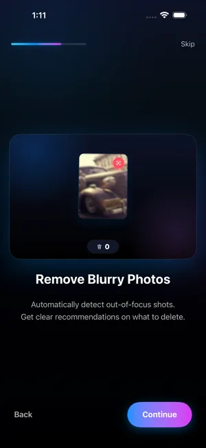

How to find and delete blurry photos on iPhone
Updated · By Mohamed Elatabany
Blurry photos pile up quietly: shaky low-light shots, missed focus, photos taken while walking. The Photos app has no blur filter, so you either hunt for them by eye or use an app that checks sharpness for you. This guide covers both.
Why iPhone photos come out blurry
- Motion blur. In dim light the shutter stays open longer, so camera shake or a moving subject smears the image.
- Missed focus. The camera focused on the background instead of the subject, or you were too close.
- Dirty lens. A smudge makes everything look soft and hazy.
- Accidental shots. Pocket photos, shots taken while lowering the phone.
Most of these are never worth keeping, and they are often taken next to a good version of the same moment.
Method 1: find blurry photos manually in Photos
There is no "blurry" album or search term in Photos, but you can speed up a manual pass:
- Open Photos and switch the library to show all photos, then pinch to make thumbnails larger. Blur is hard to see at the smallest size.
- Start where blur is likely: night-time, indoor events, concerts, and moments when you were moving.
- Open any doubtful photo and pinch to zoom on faces or text. If it is soft at 100%, it will look soft when printed or shared.
- Tap Select in the grid, tap the blurry ones (or drag across rows), then tap the trash icon and confirm.
- Check Media Types → Bursts too. Bursts usually contain several blurry frames; keep the sharp one with Select → tick it → Done → Keep Only 1 Favorite.
This works, but for a large library it means looking closely at thousands of photos.
Method 2: let Photo Cleaner flag them

Photo Cleaner's Blur Detection analyses your photos on the device and flags shots that are likely out of focus or shaken. Nothing is uploaded, and it works offline.
- Install Photo Cleaner and allow Full Access to your photos.
- Open Blur Detection. The app goes through your library and collects photos that look out of focus.
- Swipe through the results: left to delete, right to keep. Some photos are blurry on purpose, such as motion shots or a soft background, so you decide on each one.
- Review the Trash Bin, then empty it. iOS asks you to confirm, and the photos go to Recently Deleted for 30 days.
What to keep even if it is blurry
- The only photo of a moment. A soft photo of a person who is no longer around is worth more than a sharp photo of nothing.
- Intentional blur. Light trails, panning shots, Portrait mode backgrounds and Long Exposure Live Photos are meant to look like that.
- Screenshots of documents you still need, even if they are slightly soft.
When in doubt, swipe right. You can always delete later; you can't undo after Recently Deleted is emptied.
Fewer blurry photos in the future
- Wipe the lens before important shots. It fixes more "soft" photos than any setting.
- Tap to focus on your subject; press and hold to lock focus and exposure (AE/AF Lock).
- Hold still in Night mode until the timer finishes, or rest the phone on something.
- Take a few frames of moving subjects, then keep the best one. Photo Cleaner's Similars / Duplicates finder marks the best shot in a group of near-identical photos, so the extra frames are easy to clear later.
Blurry shots often hide among similar ones
When a moment matters, people tend to take several photos of it, and only one or two come out sharp. Rather than judging each frame on its own, look at the group: Photo Cleaner's Similars / Duplicates finder stacks near-identical shots and marks the best one, so you can keep that one and send the shaky frames to the Trash Bin in one step. Running Similars first and Blur Detection second leaves fewer photos to review, because many blurry frames are already gone by the time you get to them.
Freeing the space
Deleted photos stay in Utilities → Recently Deleted for 30 days and still use storage. Open it (it is locked with Face ID, Touch ID or your passcode on iOS 17 and later), tap Select → Delete All to free the space immediately.
Related: delete duplicate and similar photos, clean up your camera roll fast.
Try the faster way
Photo Cleaner is free to download, with 100 deletions free, one time.
Get Photo Cleaner on the App Store